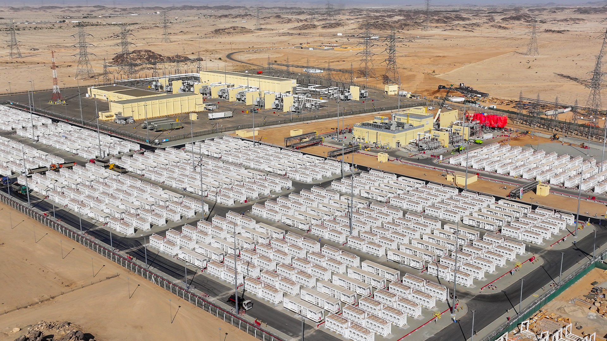
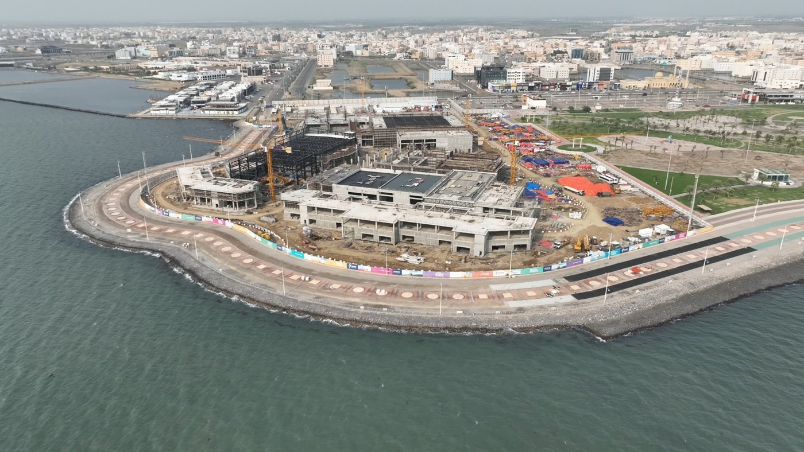
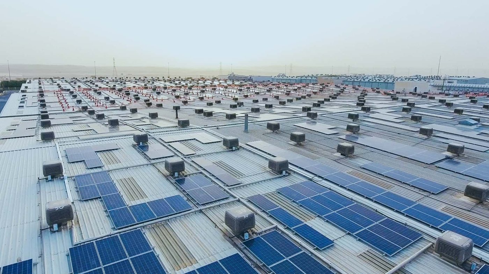

Alfanar Projects
Corporate & Digital Market Assessment
Group structure, target markets, competitive landscape, institutional stakeholders, and social-media performance.
Alfanar Group – Corporate Structure
Alfanar Projects official corporate profile
Explore the company's original project photography, graphic language, engineering illustrations, and business-line visuals from its published corporate profile.
Open original corporate profile ↗According to the official Alfanar Projects group-structure page, Alfanar Group is organized into three main divisions, with Alfanar Projects operating its own specialized business arms and business units.
Alfanar Projects – Five main arms
- Technical Services
- Calibration Services
- Operation & Maintenance
- Testing & Commissioning
2. Group divisions and responsibilities
| Division | Main activities |
|---|---|
| Alfanar Electric | Manufacturing electrical and electronic products for B2B and B2C markets. |
| Alfanar Building Systems | Manufacturing precast and prestressed concrete structures. |
| Alfanar Projects | Project development, engineering construction, engineering services, and digital solutions. |
3. Alfanar Projects – Detailed structure
| Brand / business arm | Responsibilities |
|---|---|
| Alfanar Engineering Construction | Engineering, procurement and construction under EPC, EPCM and LSTK contract models. |
| Alfanar Global Development (AGD) | Project development, financing, design, construction and operation across energy, water, healthcare and infrastructure. |
| Alfanar Digital Solutions (ADS) | Systems integration, cybersecurity, cloud computing, AI, machine learning and data analytics. |
| Alfanar Steel Structures | Design, fabrication, galvanization, supply and erection of steel structures. |
| Alfanar Engineering Services (AES) | Technical repair services, calibration, testing and commissioning, and operation and maintenance. |
4. Important distinction for marketing strategy
Distinguish between the corporate group structure, operating brands, and the six market-facing business lines promoted commercially by Alfanar Projects.
Source: Alfanar Projects – Group Structure.
Primary Markets & Top Competitors
Saudi Arabia is Alfanar Projects' core market. Its wider footprint includes the Middle East, Europe and India. Key sectors include power infrastructure, grid engineering, renewable energy, EPC contracting and project development.
1. Primary geographic markets
| Priority | Market | Main business opportunities |
|---|---|---|
| Core | Saudi Arabia | Power grids, substations, renewable energy, infrastructure, water, digital transformation |
| High | UAE & Bahrain | Grid infrastructure, engineering construction, energy projects |
| High | Egypt | Renewable energy, wind, solar, green hydrogen |
| High | United Kingdom | Sustainable aviation fuel, clean energy, project development |
| High | Spain | Wind energy, renewable project development |
| Established | India | Wind energy development, turbine technology |
| Additional presence | Germany, Italy, Turkey | International business presence; project-scale priorities need further validation |
The geographic priority labels are strategic assessments, not official revenue-based market rankings.
2. Primary industries
| Business line | Primary target customers |
|---|---|
| Grid & Power | Utilities, national grid operators, government energy authorities |
| Renewable Energy | Energy developers, utilities, IPPs, government renewable programs |
| Infrastructure | Government entities, mega-project developers, transportation and infrastructure authorities |
| Water | Water authorities, desalination developers, utility operators |
| Process & Industrial | Industrial manufacturers, energy companies, process plant developers |
| Digital Solutions | Government, utilities, infrastructure operators, large enterprises |
| Healthcare | Healthcare authorities, hospitals, public-private partnership developers |
3. Top competitors by business line
| Business line | Key competitors | Competition type |
|---|---|---|
| Grid & Power EPC | Larsen & Toubro, Elsewedy Electric, PowerChina, GE Vernova | Direct EPC competition and technology solutions |
| Renewable Energy & Development | ACWA Power, Masdar, EDF Renewables, PowerChina | Project development, financing and delivery |
| Infrastructure & Construction | Nesma & Partners, El Seif Engineering Contracting, Albawani | EPC and mega-project construction |
| Water & Desalination | ACWA Power, Metito, Veolia | Water development, desalination, EPC and O&M |
| Industrial & Process | Samsung E&A, Technip Energies, Worley | Industrial EPC and engineering |
| Digital Solutions | solutions by stc, Elm, SITE | Enterprise IT, systems integration and digital transformation |
Benchmark shortlist; not a verified market-share ranking. Some companies compete with only particular Alfanar business arms.
4. Five priority competitors for marketing benchmarking
1. Elsewedy Electric
elsewedyelectric.comClosest broad benchmark for integrated electrical infrastructure, EPC, grid and renewable energy solutions.

2. Larsen & Toubro (L&T)
larsentoubro.comStrong global benchmark for engineering construction, power transmission, large-scale infrastructure and EPC capabilities.
3. Nesma & Partners
nesmapartners.comImportant Saudi competitor in construction, infrastructure, industrial services and major project delivery.
4. ACWA Power
acwapower.comStrong benchmark for international renewable energy, water, project financing and asset development. More comparable to Alfanar Global Development than its construction arm.
5. PowerChina
powerchina.cnLarge international competitor in power, renewables, infrastructure and utility-scale EPC.
5. Competitive indicator
Saudi power transmission projects by EPC contractor, based on a December 2025 industry report. Project counts are not overall company market share.
Source referenced in the original assessment: Saudi Gulf Projects, December 2025 Power Transmission Projects Report.
6. Strategic recommendation for marketing assessment
Corporate-level benchmarking: Elsewedy Electric, L&T, Nesma & Partners, ACWA Power and PowerChina. Assess positioning, digital visibility, website experience, communications, thought leadership and global presence.
Business-line benchmarking: Select three direct competitors per sector, particularly Grid, Renewable Energy, Water and Digital. Assess search visibility, case studies, technical content, decision-maker targeting and lead-generation opportunities.
Institutional Target Audiences – KSA & GCC
Include governmental and non-governmental associations and organizations in Alfanar Projects' target audience matrix, beginning with Saudi Arabia and selectively expanding across the GCC. Distinguish direct buyers from influencers and strategic ecosystem partners.
1. Suggested audience segments
| Target audience | Examples / types | Strategic value | Priority |
|---|---|---|---|
| Government authorities & regulators | Energy, water, infrastructure and investment authorities | Projects, tenders, policies and market access | Very High |
| Government-owned entities & utilities | SEC, National Grid SA, SWCC and relevant infrastructure entities | Direct procurement and large-scale opportunities | Very High |
| Industry associations & professional bodies | Saudi Council of Engineers, chambers of commerce, sector associations | Networking, credibility, visibility and industry relationships | High |
| Non-governmental organizations & foundations | Sustainability, renewable energy, environmental and development organizations | Partnerships, ESG positioning and thought leadership | Medium |
| Business councils & bilateral chambers | Saudi and GCC business councils, international chambers | International expansion, partnerships and market intelligence | High |
| Research institutions & universities | Energy, engineering, AI and sustainability research centers | Innovation partnerships, technical collaboration and talent access | Medium–High |
2. Priority organizations and markets
- Saudi Contractors Authority: industry relations and contracting-sector engagement.
- Saudi Council of Engineers: engineering credibility and professional visibility.
- Federation of Saudi Chambers: business networking and industry connections.
- Asharqia Chamber: industrial and energy-sector relationships, networking and sector events.
- Relevant sector bodies: associations connected with energy, renewable energy, water and infrastructure.
Geographic sequencing: KSA first; UAE and Bahrain next; Qatar, Oman and Kuwait based on commercial priorities and project pipeline.
3. How to approach these audiences
Use institutional relations, executive networking, industry events, technical thought leadership, partnerships, sponsorships and joint initiatives rather than treating these audiences as conventional lead-generation prospects.
Add three fields to the audience matrix
| Field | Options |
|---|---|
| Relationship role | Buyer / Decision-maker / Influencer / Partner / Regulator |
| Business relevance | Grid / Renewable Energy / Infrastructure / Water / Digital |
| Strategic objective | Lead generation / Market access / Brand authority / Partnerships |
Visual note: logos, website icons and official project photographs are bundled with this report. Sector illustrations are custom graphic interpretations, not official Alfanar artwork.
AI Marketing Automation Strategy
For Alfanar Projects, AI automation should extend beyond content creation.Alfanar Projects, I would go beyond AI-assisted content creation.
I would recommend building an AI-enabled marketing operating model that automates repetitive activities across research, content, project marketing, stakeholder engagement, sales enablement, and performance reporting.
The objective is not simply to produce content faster. It's to improve marketing efficiency, strengthen market intelligence, and support business development across Alfanar's different business lines.
5.1 · Twelve AI marketing automations
| # | Process | What AI can automate | Business impact | Priority |
|---|---|---|---|---|
| 01 | Project-to-Content Engine | Transform approved project information into case studies, LinkedIn posts, website content, and video scripts | Faster, consistent project marketing | Very High |
| 02 | Competitor Intelligence | Monitor competitors' websites, projects, tenders, announcements, and content strategies | Better competitive positioning | Very High |
| 03 | Market & Tender Intelligence | Identify relevant public tenders, infrastructure projects, and investment announcements in KSA/GCC | Earlier commercial opportunity identification | Very High |
| 04 | SEO & AI Search Monitoring | Track technical SEO issues, keyword performance, AI search visibility, and competitor mentions | Better digital discoverability | High |
| 05 | Institutional Stakeholder Intelligence | Track government authorities, professional associations, chambers, and key GCC organizations | Stronger relationship and engagement opportunities | High |
| 06 | Content Repurposing & Localization | Convert approved technical content into Arabic/English formats for different audiences and channels | Lower production effort | Very High |
| 07 | Social Listening & Sentiment Analysis | Monitor brand mentions, project discussions, relevant industry topics, and sentiment | Better reputation management | High |
| 08 | Marketing Performance Reporting | Consolidate website, social, campaign, and CRM data into executive dashboards | Faster, more reliable decisions | Very High |
| 09 | Executive Thought Leadership | Suggest timely subjects and prepare research-backed executive posts, articles, and speaking briefs | Stronger executive visibility | Medium–High |
| 10 | Proposal & Sales Enablement | Retrieve approved credentials, project references, and capabilities to support proposals and presentations | Faster responses to business opportunities | High |
| 11 | Event & Exhibition Management | Automate invitation segmentation, follow-ups, post-event summaries, and lead routing | Improved event ROI | High |
| 12 | Website Content Governance | Detect outdated project facts, broken links, inconsistent capabilities, and missing multilingual content | Stronger accuracy and governance | High |
These are proposed use cases, not claims that Alfanar already has the systems or data access required to implement them.
5.2 · Five priority workflows
For Alfanar, I would focus on five practical automation workflows that can be demonstrated in the assessment.
Example 01 — Automated Project-to-Content Engine
Approved project documents
Facts, images, results, milestones
AI extraction & content generation
Validate facts and apply brand guidelines
Editorial and technical approval
Then schedule approved content
Pilot this using the Bisha BESS project, then replicate it for other verified Alfanar project pages.
Example 02 — AI Competitive Intelligence Agent
Automatically scans selected competitors weekly, identifies new project announcements, partnerships, campaigns and positioning changes, and generates an executive summary showing what matters to Alfanar.
Example 03 — Government & Stakeholder Monitoring
Tracks selected Saudi and GCC ministries, government agencies, utilities, chambers and professional associations. Flags relevant events, projects, initiatives and potential partnership opportunities.
Example 04 — Automated Marketing Performance Dashboard
Integrates GA4, Search Console, LinkedIn analytics, advertising platforms and CRM data where access is available. Generates weekly KPI reports, anomaly alerts and practical recommendations.
Example 05 — AI Tender & Opportunity Qualification
Monitors authorized tender sources, categorizes opportunities by Alfanar's business lines, checks eligibility criteria and project relevance, and prepares an opportunity brief for the business-development team.
5.3 · Implementation phases
Illustrative implementation complexity and value assessment, not measured outcomes.
| Automation | Business value | Complexity | Suggested phase |
|---|---|---|---|
| Project-to-Content Engine | Very High | Low–Medium | 1 |
| Competitive Intelligence | High | Low–Medium | 1 |
| Stakeholder Monitoring | High | Medium | 1 |
| Marketing Dashboard | Very High | Medium–High | 2 |
| Tender Qualification | Very High | High | 2 |
5.4 · AI-powered Marketing Intelligence & Execution Hub
Rather than showing 12 separate AI ideas, I would introduce the concept of an AI-Powered Marketing Intelligence & Execution Hub.
Alfanar AI Marketing Hub
One intelligence layer serving multiple marketing processes
Verified data sources → AI-assisted analysis and drafting → Human approval → Execution and measurement
This also aligns with Alfanar's actual portfolio of project development, engineering construction, engineering services and digital solutions, rather than being a generic AI marketing framework.
My recommendation: For the assessment, demonstrate two working examples: the Project-to-Content Engine and the Competitive Intelligence Agent. They are relatively practical to build using public information, and they demonstrate both content execution and strategic intelligence. Then show the remaining automations as the next phase.
A strong executive message would be:
From AI-Assisted Content to AI-Enabled Marketing Operations. We can use AI not only to accelerate content production, but also to continuously capture market intelligence, identify opportunities, support stakeholder engagement, and make marketing decisions faster—while maintaining human control over accuracy, brand messaging and approvals.
Practical Execution Plan & AI Demonstration
What the public evidence actually supports
LinkedIn: Official Alfanar Projects company page verified; the publicly indexed October snapshot shows approximately 809,701 followers, although displayed counts vary with crawl date and region. Recent accessible posts feature WPC Energy Congress, Saudi National Day, national infrastructure, corporate news and a wind PPA in India. This supports a finding of strong corporate communications, not a conclusion about engagement rate or lead generation.
| Channel | Public verification | What we know | What to do next |
|---|---|---|---|
| Official account verified | Corporate updates, events, project and employer-brand content | Log last 30 posts by pillar, format, audience, reactions/comments and CTA; calculate median post interactions | |
| YouTube | Projects-owned channel not conclusively verified | Video is a useful format, but reach and ownership cannot be stated | Get the official channel URL; log last 20 videos, views, recency, descriptions and funnel links |
| X, Instagram, Facebook | Projects-owned accounts not conclusively verified | Do not attribute Alfanar Group accounts to Projects | Confirm URLs and ownership with marketing before benchmarking |
Public links: Alfanar Projects LinkedIn · Official website. Performance baseline remains partial: impressions, unique reach, demographics, referrals and conversions need internal analytics.
Measurement worksheet: apply consistently across every verified channel
| Dimension | Metric / review method | Output |
|---|---|---|
| Publishing | Posts per month, format mix, bilingual split | Channel activity benchmark |
| Content | Project proof vs news vs expertise vs people vs partnerships | Content-pillar map |
| Public response | Median interactions per recent post; comment relevance | Indicative public response (not reach-based ER) |
| Audience | Available follower geography, industry, seniority | Target-account fit (requires admin access) |
| Business impact | UTM referrals, qualified sessions, inquiries, CRM opportunities | Channel-to-pipeline view (requires first-party data) |
Proposed concept: Engineering the Future, Project by Project
A proof-based integrated campaign using three named, verified Alfanar projects to demonstrate distinct capabilities. Use the official project pages as the source of truth; reuse photos only after confirming approval and rights.

Bisha BESS
Grid · Saudi Electricity Company · 2,000 MWh; 488 battery units · Completed
Audience: utilities, regulators, grid decision-makers, developers.
Message: Grid resilience backed by tangible storage capacity.

Jazan Entertainment Complex
Infrastructure · SEVEN · 73,000 m² built-up area · In progress
Audience: mega-project developers, government, infrastructure leaders.
Message: Integrated EPC delivery for quality-of-life destinations.

Industrial City Rooftop Solar
Renewables · Alfanar Industrial City · 4 MW · Completed
Audience: industrial operators, facilities leaders, energy buyers.
Message: Practical industrial energy transition.
Visual references now use the official Alfanar project pages. Original third-party image credits in the source report were superseded by these assets. Campaign use still requires internal approval and confirmation of rights.
Integrated content package
| Asset | Adaptation | Distribution & KPI |
|---|---|---|
| Project landing hub | Three proof-led project stories, metrics and CTAs | Website, organic/paid traffic · qualified visits |
| 3 technical case studies | One per project; context, challenge, Alfanar scope, documented outcomes | Website + sales enablement · engaged accounts |
| 6–9 LinkedIn posts | Carousels, project metrics, engineer perspectives | LinkedIn · target-audience interactions, referred sessions |
| Three 45–60 sec edits | Project footage, metric graphics, executive/narrated insights | LinkedIn/YouTube · completion, qualified viewers |
| Partner outreach kit | Approved institutional and technical narrative | Stakeholder outreach · meetings and responses |
Proposed rollout: Week 1 verification and approvals → Week 2 content and creative production → Week 3 launch Bisha → Week 4 launch Jazan and rooftop solar → Week 5 paid/organic optimization and reporting. This is a proposed pilot, not an existing Alfanar campaign.
Grid demonstration: Bisha Battery Energy Storage System
Verified facts: Client Saudi Electricity Company; location Bisha Region, Aseer, Saudi Arabia; completed; 2,000 MWh; up to 500 MW over four hours; 488 units; supports backup power, storage during lower-demand periods, use during peak demand and renewable integration. Official project source.
Step A · Structured brief prepared from the official facts
Business goal: Demonstrate engineering and grid-development credibility without making unverified outcome claims.
Audience: Saudi/GCC utility leaders, grid planners, renewable developers and institutional stakeholders.
Core message: Grid-scale storage helps balance supply and demand and support renewable integration.
Allowed facts: project name, client, status, location, 2,000 MWh, 500 MW/4 hours, 488 units.
Editorial guardrails: Do not claim measured grid uptime gains, cost savings, emissions reductions, delivery speed or sole contractor credit without documentary proof.
Step B · Before vs after
Alfanar Projects played a role in delivering a battery energy storage system in Bisha. The facility provides 2,000 MWh of storage using 488 units and can deliver up to 500 MW over four hours.
Correct, but missing target-audience framing, the grid challenge and clear reader value. This is a constructed baseline, not a quote from Alfanar's website.
How Bisha BESS strengthens the case for grid-scale storage
As power systems add more renewable generation, storing energy for use when demand rises becomes increasingly important. In Bisha, Saudi Arabia, Alfanar Projects contributed to the delivery of a 2,000 MWh battery energy storage system for Saudi Electricity Company. With 488 battery units and capacity of up to 500 MW over four hours, the completed project demonstrates the scale at which storage infrastructure can support grid flexibility and renewable-energy integration.
Editorial review: all quantitative claims matched to Alfanar's official project page; functional benefits described qualitatively, not as measured results.
Step C · Ready-to-review LinkedIn draft
2,000 MWh. 488 battery units. One important step toward a more flexible power grid.
Grid-scale energy storage is becoming an essential part of modern electricity infrastructure. At Bisha in Saudi Arabia, Alfanar Projects contributed to the delivery of a battery energy storage system for Saudi Electricity Company, designed to store power during lower-demand periods and make it available when demand increases.
With up to 500 MW of capacity over four hours, the project demonstrates how large-scale storage can support grid reliability and renewable-energy integration.
Explore the project: Official project page.
#AlfanarProjects #GridInfrastructure #EnergyStorage
Step D · Human verification checklist
✓ Technical figures checked against the official project page · ✓ Client and location confirmed · ✓ No invented ROI or emissions data · ✓ No unverified contractor exclusivity · Pending: company voice/brand approval, asset rights, engineering sign-off and communications approval before external publication.
Establish the channel baseline with verified data; turn existing project evidence into an audience-led flagship campaign; demonstrate AI as a controlled editorial accelerator grounded in verified facts, not as a replacement for engineering and brand review.
Social Media Audit
Outside-in assessment | 18 October 2026 | Publicly accessible information
Alfanar Projects has a substantial LinkedIn presence and a foundation of corporate credibility. However, its social-media strategy appears more focused on communicating achievements and organizational developments than systematically influencing buyers, educating technical decision-makers or generating measurable commercial opportunities.
1. LinkedIn performance overview
Alfanar Projects – LinkedIn
Construction · Riyadh, Saudi Arabia
What they are doing well
Figures and examples are from the original public-profile review and may change over time.
2. Content strategy assessment
Project Excellence Award communications for the Bisha BESS project demonstrate capability proof points; AI-driven project intelligence posts show an existing technical-thought-leadership foundation that could be expanded.
3. Overall social channel audit
Alfanar Projects-branded X account: x.com/alfanarprojects (publicly discoverable; verify administration internally).
4. Strategic gaps and commercial opportunities
Audience-specific communication
Different messages for utilities, government entities, project developers, EPC partners and engineering buyers instead of primarily broad corporate updates.
From announcements to expertise
Develop technical case studies, engineering insights, executive perspectives and project lessons drawn from the existing resource library.
Institutional and stakeholder engagement
Structure engagement with Saudi authorities, utilities, chambers, professional associations and relevant GCC institutions.
Executive advocacy
Activate engineering leaders, project directors and business-unit executives as subject-matter voices.
Commercial measurement
Connect impressions and engagement to target-account interactions, qualified website traffic, relevant inquiries and CRM opportunities.
5. Recommended LinkedIn content mix
Strategic test allocation, not an observed historical breakdown.
The priority is to demonstrate expertise and business value rather than simply increasing posting volume.
6. Data needed to complete the audit
Request 12 months of channel analytics: follower growth, impressions, reach, engagement by content type, follower geography and seniority, referral traffic, paid social results and attributed leads. Also collect the complete inventory of owned channels for Alfanar Projects and all sub-brands to assess duplication, ownership, brand architecture and cross-promotion.
7. Presentation conclusion
Alfanar Projects has established substantial corporate visibility, particularly through LinkedIn and project-led communications. The next opportunity is to build on that foundation with audience-specific thought leadership, technical storytelling, structured institutional engagement and measurable business-development outcomes.
Confidence: High for reviewed LinkedIn profile and content observations; moderate for interpretation; insufficient evidence for cross-channel performance and actual lead-generation effectiveness.
Placement in the 12-slide marketing assessment: Slide 2 (Outside-In Findings), Slide 4 (Who We Need to Influence), and Slide 5 (Five Pillars of an AI-Enabled Strategy).
Reference links
The material above preserves the four earlier answers, including their assessments and limitations; it is not a new verification of all facts as of the publication date.